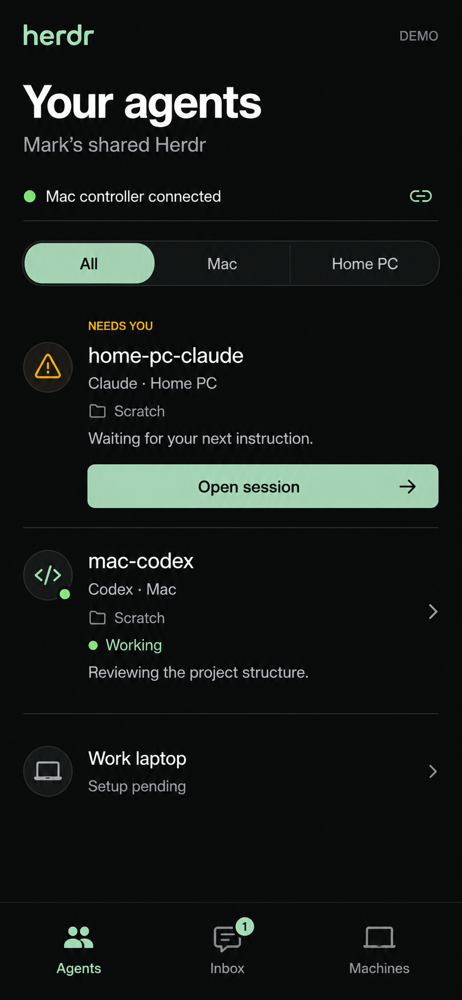
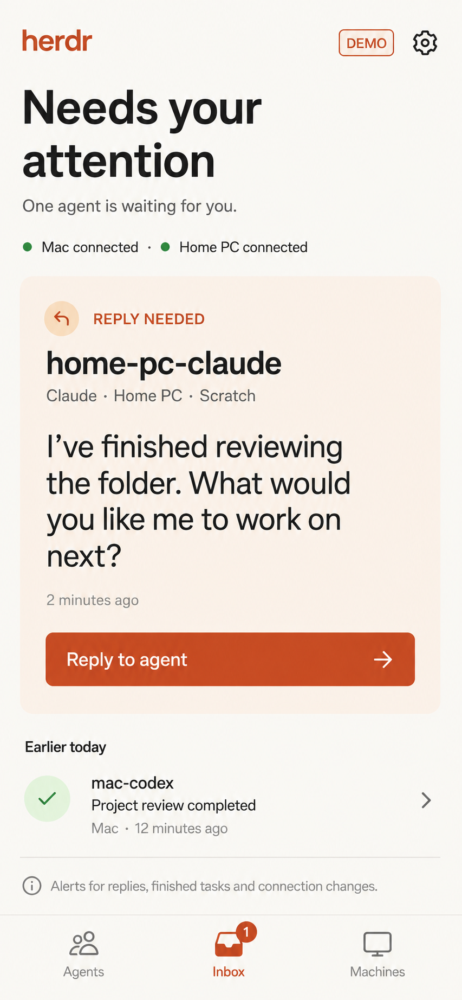
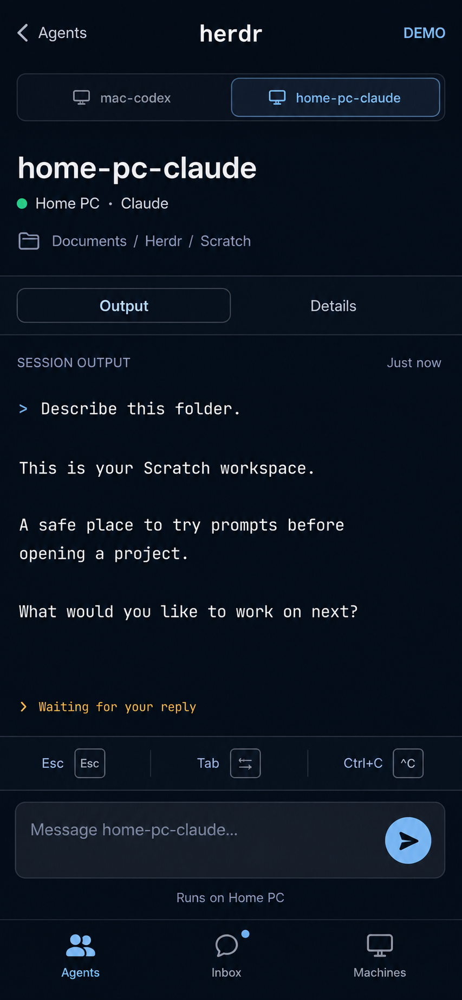

HERDR / IPHONE CONCEPTS
Your agents, from your phone.
Three visual directions for your shared Herdr app. These are static mockups with sample activity. Open any image for a closer look.
Option 1
Open full size
Option 2
Open full size
Option 3
Open full size